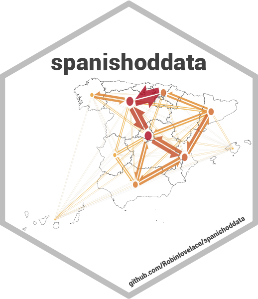
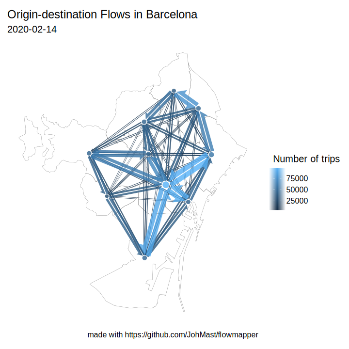

spanishoddata::spod_codebook(ver = 1)

Codebook and cookbook for v1 (2020-2021) Spanish mobility data
Source:vignettes/v1-2020-2021-mitma-data-codebook.qmd
You can view this vignette any time by running:
The mobility data v1 (2020-2021) was originally released by the Ministerio de Transportes, Movilidad y Agenda Urbana (MITMA) , now Ministerio de Transportes y Movilidad Sostenible (MITMS) (Secretaría de Estado de Transportes, Movilidad y Agenda Urbana 2021). The dataset is produced by Nommon using the raw data from Orange España. Even though the raw data is only from one mobile phone operator, the resulting flows and other counts of number of individuals in the data set are already resampled to be representative of the total population of Spain (see details in the official methodology). The tables in the data set provide hourly flows between zones across Spain for every day of the observation period (2020-02-14 to 2021-05-09), and the number of individuals making trips for each zone. This document will introduce you to the available data and provide brief code snippets on how to access it using the spanishoddata R package.
Key sources for this codebook/cookbook include:
original data collection methodology in Spanish + automatically translated English version of methodology
original data codebook in Spanish + automatically translated English version of codebook
Note: Kindly consult the documents above for any specific details on the methodology. The codebook here is only a simplified summary.
To access the data we reference in this codebook, please follow these steps:
Install spanishoddata R package:
if (!require("remotes")) install.packages("remotes")
remotes::install_github("rOpenSpain/spanishoddata",
force = TRUE, dependencies = TRUE)Load the package: Load the package:
Using the instructions below, set the data folder for the package to download the files into. You may need up to 30 GB to download all data and another 30 GB if you would like to convert the downloaded data into analysis ready format (a DuckDB database file, or a folder of parquet files). You can find more info on this conversion in the Download and convert OD datasets vignette.
Set the data directory
Choose where spanishoddata should download (and convert) the data by setting the SPANISH_OD_DATA_DIR environment variable with the following command:
Sys.setenv(SPANISH_OD_DATA_DIR = "~/spanish_od_data")The package will create this directory if it does not exist on the first run of any function that downloads the data.
Setting data directory for advanced users
To permanently set the directory for all projects, you can specify the data directory globally by setting the SPANISH_OD_DATA_DIR environment variable, e.g. with the following command:
usethis::edit_r_environ()
# Then set the data directory globally, by typing this line in the file:SPANISH_OD_DATA_DIR = "~/spanish_od_data"You can also set the data directory locally, just for the current project. Set the ‘envar’ in the working directory by editing .Renviron file in the root of the project:
file.edit(".Renviron")Overall approach to working with data
If you only want to analyse the data for a few days, you can use the spod_get() function. It will download the raw data in CSV format and let you analyse it in-memory. This is what we cover in the steps on this page.
If you need longer periods (several months or years), you should use the spod_convert() and spod_connect() functions, which will convert the data into special format which is much faster for analysis, for this see the Download and convert OD datasets vignette. spod_get_zones() will give you spatial data with zones that can be matched with the origin-destination flows from the functions above using zones ’id’s. Please see a simple example below, and also consult the vignettes with detailed data description and instructions in the package vignettes with spod_codebook(ver = 1) and spod_codebook(ver = 2), or simply visit the package website at https://rOpenSpain.github.io/spanishoddata/. The Figure 1 presents the overall approach to accessing the data in the spanishoddata package.

1. Spatial data with zoning boundaries
The boundary data is provided at two geographic levels: Distrtics and Municipalities. It’s important to note that these do not always align with the official Spanish census districts and municipalities. To comply with data protection regulations, certain aggregations had to be made to districts and municipalities”
1.1 Districts
Districts correspond to official census districts in cities; however, in those with lower population density, they are grouped together. In rural areas, one district is often equal to a municipality, but municipalities with low population are combined into larger units to preserve privacy of individuals in the dataset. Therefore, there are 2850 ‘districts’ compared to the 10494 official census districts on which they are based.
To access it:
districts_v1 <- spod_get_zones("dist", ver = 1)The districts_v1 object is of class sf consisting of polygons.
Data structure:
| Variable Name | Description |
|---|---|
id |
District id assigned by the data provider. Matches with id_origin, id_destination, and id in district level origin-destination data and number of trips data. |
census_districts |
A list of census district identifiers as classified by the Spanish Statistical Office (INE) that are spatially bound within polygons with id above. |
municipalities_mitma |
A list of municipality identifiers as assigned by the data provider in municipality zones spatial dataset that correspond to a given district id . |
municipalities |
A list of municipality identifiers as classified by the Spanish Statistical Office (INE) that correspond to polygons with id above. |
district_names_in_v2 |
A list of names of district polygons defined in the v2 version of this data that covers the year 2022 and onwards that correspond to polygons with id above. |
district_ids_in_v2 |
A list of identifiers of district polygons defined in the v2 version of this data that covers the year 2022 and onwards that correspond to polygons with id above. |
1.2 Municipalities
Municipalities are made up of official municipalities in those of a certain size; however, they have also been aggregated in cases of lower population density. As a result, there are 2,205 municipalities compared to the 8,125 official municipalities on which they are based.
To access it:
municipalities_v1 <- spod_get_zones("muni", ver = 1)The resulting municipalities_v1 object is type sf consisting of polygons.
Data structure:
| Variable Name | Description |
|---|---|
id |
District id assigned by the data provider. Matches with id_origin, id_destination, and id in municipality level origin-destination data and number of trips data. |
municipalities |
A list of municipality identifiers as classified by the Spanish Statistical Office (INE) that correspond to polygons with id above. |
districts_mitma |
A list of district identifiers as assigned by the data provider in districts zones spatial dataset that correspond to a given municipality id . |
census_districts |
A list of census district identifiers as classified by the Spanish Statistical Office (INE) that are spatially bound within polygons with id above. |
municipality_names_in_v2 |
A list of names of municipality polygons defined in the v2 version of this data that covers the year 2022 and onwards that correspond to polygons with id above. |
municipality_ids_in_v2 |
A list of identifiers of municipality polygons defined in the v2 version of this data that covers the year 2022 and onwards that correspond to polygons with id above. |
The spatial data you get via spanishoddata package is downloaded directly from the source, the geometries of polygons are automatically fixed if there are any invalid geometries. The zone identifiers are stored in id column. Apart from that id column, the original zones files do not have any metadata. However, as seen above, using the spanishoddata package you get many additional columns that provide a semantic connection between official statistical zones used by the Spanish government and the zones you can get for the v2 data (for 2022 onward).
2. Mobility data
All mobility data is referenced via id_origin, id_destination, or other location identifiers (mostly labelled as id) with the two sets of zones described above.
2.1. Origin-destination data
The origin-destination data contain the number of trips between districts or municipalities in Spain for every hour of every day between 2020-02-14 and 2021-05-09. Each flow also has attributes such as the trip purpose (composed of the type of activity (home/work_or_study/other) at both the origin and destination), province of residence of individuals making this trip, distance covered while making the trip. See the detailed attributes below in a table. Figure 2 shows an example of total flows in the province of Barcelona on Feb 14th, 2020.

Here are the variables you can find in both the district and municipality level origin-destination data:
| English Variable Name | Original Variable Name | Type | Description |
|---|---|---|---|
date |
fecha |
Date |
The date of the recorded data, formatted as YYYY-MM-DD. |
id_origin |
origen |
factor |
The origin zone id of district or municipalitity. |
id_destination |
destino |
factor |
The destination zone id of district or municipalitity. |
activity_origin |
actividad_origen |
factor |
The type of activity at the origin zone, recoded from casa, otros, trabajo_estudio to home, other, work_or_study respectively. |
activity_destination |
actividad_destino |
factor |
The type of activity at the destination zone, similarly recoded as for activity_origin above. |
residence_province_ine_code |
residencia |
factor |
The province code of residence if individuals who were making the trips in n_trips, encoded as province codes as classified by the Spanish Statistical Office (INE). |
residence_province_name |
Derived from residencia
|
factor |
The full name of the residence province, derived from the province code above. |
time_slot |
periodo |
integer |
The time slot during which the trips occurred. |
distance |
distancia |
factor |
The distance range of the trip, categorized into specific intervals such as 0005-002 (500 m to 2 km), 002-005 (2-5 km), 005-010 (5-10km), 010-050 (10-50 km), 050-100 (50-100 km), and 100+ (more than 100 km). |
n_trips |
viajes |
numeric |
The number of trips for that specific origin-destination pair and time slot. |
trips_total_length_km |
viajes_km |
numeric |
The total length of trips in kilometers, summing up all trips between the origin and destination zones. |
year |
year |
integer |
The year of the recorded data, extracted from the date. |
month |
month |
integer |
The month of the recorded data, extracted from the date. |
day |
day |
integer |
The day of the recorded data, extracted from the date. |
Data transformation note
The original data is stored in the maestra-2 folder with suffixes distritos (for district zoning) and municipios (for municipality zoning). We only use the district level data because of several data issues with the municipality data documented here and here, but also because the distric level data contains more columns with useful origin-destination flow characteristics. As a result, you get both the district level data and the municipality level data with the same columns. Municipality level data is simply a re-aggregation of district level data using the official relations file where district identifiers are mapped to municipality identifiers (orginal file is relaciones_distrito_mitma.csv).
Getting the data
To access the data, use the spod_get() function. In this example we will use a short interval of dates:
The data for the specified dates will be automatically downloaded and cached in the SPANISH_OD_DATA_DIR directory. Existing files will not be re-downloaded.
Working with the data
The resulting objects od_dist and od_muni are of class tbl_duckdb_connection1. Basically, you can treat these as regular data.frames or tibbles. One important difference is that the data is not actually loaded into memory, because if you requested more dates, e.g. a whole month or a year, all that data would most likely not fit into your computer’s memory. A tbl_duckdb_connection is mapped to the downloaded CSV files that are cached on disk and the data is only loaded in small chunks as needed at the time of computation. You can manipulate od_dist and od_muni using dplyr functions such as select(), filter(), mutate(), group_by(), summarise(), etc. In the end of any sequence of commands you will need to add collect() to execute the whole chain of data manipulations and load the results into memory in an R data.frame/tibble like so:
# A tibble: 24 × 2
time_slot mean_hourly_trips
<int> <dbl>
1 18 21.4
2 10 19.3
3 2 14.8
4 15 19.8
5 11 19.9
6 16 19.6
7 22 20.9
8 0 18.6
9 13 21.1
10 19 22.5
# ℹ 14 more rows
# ℹ Use `print(n = ...)` to see more rowsIn this example above, we calculated mean hourly flows over the 4 days of the requested period. The full data for all 4 days was never loaded into memory all at once. Rather the available memory of the computer was used up to its maximum limit to make that calculation happen, without ever exceeding the available memory limit. This is done transparantly to the user with the help of DuckDB (specifically, with {duckdb} R package Mühleisen and Raasveldt (2024)).
The same summary operation as provided in the example above can be done with the entire dataset for the full 18 month on a regular laptop with 8-16 GB memory. It will take a bit of time to complete, but it will be done. To speed things up, we will also demonstrate in the end of the document, how the data can be converted to more efficient formats.
Note: As long as you use object od_dist created with spod_get() function, it is much quicker to filter the dates by the year, month and day variables, rather than by the date variable. This is because the data for each day is in a separate CSV file located in folders that look like year=2020/month=2/day=14. So when filtering by the date field, R will have to scan all CSV files comparing the specified date with what is stored inside the file. However, if you query by year, month and day variables, R only needs to check these against the path to each CSV file, which is much quicker. This caveat is only relevant as long as you use spod_get() . If you convert (see the relevant section below) the downloaded data to a format that it optimized for quick analysis, you can use whichever field you want, it should not affect the performance as much.
2.2. Number of trips data
The “number of trips” data shows the number of individuals in each district or municipality who made trips categorised by the number of trips.
| English Variable Name | Original Variable Name | Type | Description |
|---|---|---|---|
date |
fecha |
Date |
The date of the recorded data, formatted as YYYY-MM-DD. |
id |
distrito |
factor |
The identifier of the district or municipality zone. |
n_trips |
numero_viajes |
factor |
The number of individuals who made trips, categorized by 0, 1, 2, or 2+ trips. |
n_persons |
personas |
factor |
The number of persons making the trips from district or municipality with zone id. |
year |
year |
integer |
The year of the recorded data, extracted from the date. |
month |
month |
integer |
The month of the recorded data, extracted from the date. |
day |
day |
integer |
The day of the recorded data, extracted from the date. |
Data transformation note
The original data is stored in the maestra-2 folder with suffixes distritos (for district zoning) and municipios (for municipality zoning). We only use the district level data because of several data issues with the municipality data documented here and here, but also because the distric level data contains more columns with useful origin-destination flow characteristics. As a result, you get both the district level data and the municipality level data with the same columns. Municipality level data is simply a re-aggregation of district level data using the official relations file where district identifiers are mapped to municipality identifiers (orginal file is relaciones_distrito_mitma.csv).
Getting the data
To access it use spod_get() with type set to “number_of_trips”, or just “nt”. We can also set dates to the maximum possible date range 2020-02-14 to 2021-05-09 to get all the data, as this data is relatively small (under 200 Mb).
Because this data is small, we can actually load it completely into memory:
tpp_dist_tbl <- tpp_dist |> dplyr::collect()Advanced use
For more advanced use, especially for analysing longer periods (months or even years), please see Download and convert mobility datasets.
Mühleisen, Hannes, and Mark Raasveldt. 2024. Duckdb: DBI Package for the DuckDB Database Management System. https://doi.org/10.32614/CRAN.package.duckdb.
Secretaría de Estado de Transportes, Movilidad y Agenda Urbana. 2021. “Analysis of Mobility in Spain with Big Data Technology During the State of Alarm for COVID-19 Crisis Management. (Análisis de La Movilidad En España Con Tecnología Big Data Durante El Estado de Alarma Para La Gestión de La Crisis Del COVID-19).” https://www.transportes.gob.es/ministerio/proyectos-singulares/estudios-de-movilidad-con-big-data/estudios-de-movilidad-anteriores/covid-19/opendata-movilidad.